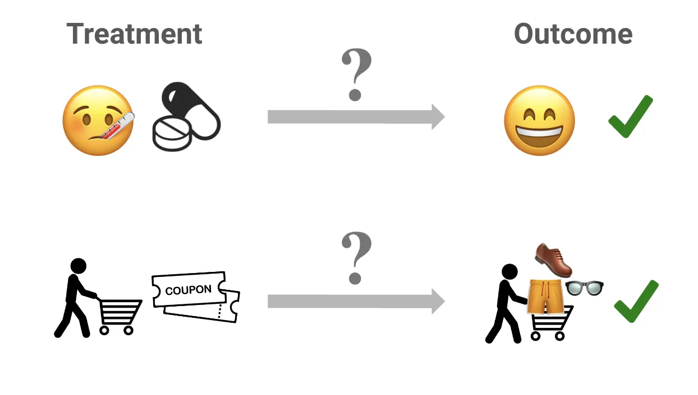
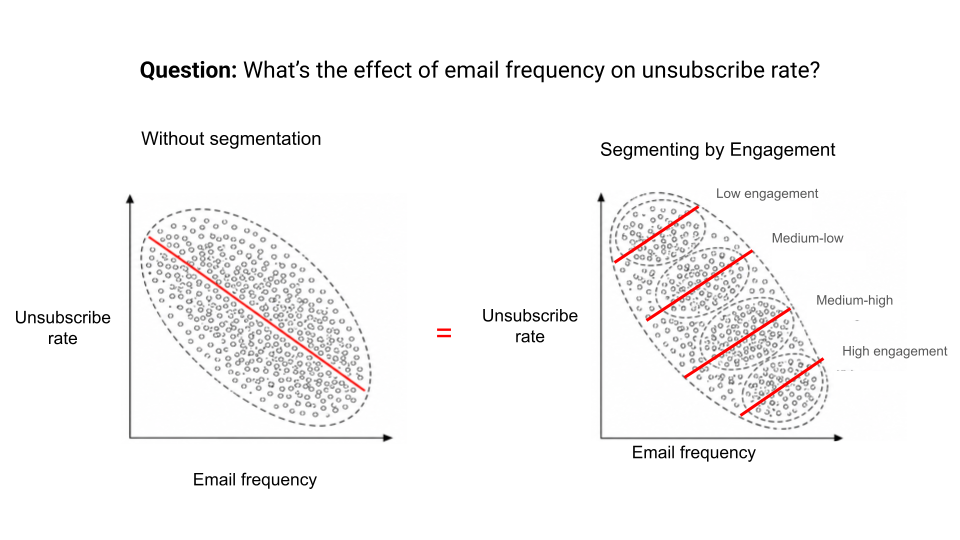

3.1 Raisonner en termes de causalité
À propos de la version française
Cette page est une traduction par IA de la version anglaise de Marketing Science in Python. La version anglaise fait foi et prévaut en cas de divergence. Le code, les notebooks et le texte intégré aux images restent en anglais. Lire la version anglaise
Prenons une situation typique que rencontrent de nombreux data scientists en entreprise. Imaginez que vous aidiez un collègue de l’équipe marketing et qu’il vous dise :
« L’équipe marketing a envoyé des bons de réduction à certains utilisateurs, et leur taux d’achat était deux fois plus élevé que celui des utilisateurs qui n’en ont pas reçu. Les bons de réduction ont donc forcément doublé le taux d’achat ! »

Seriez-vous d’accord avec cette conclusion ? À première vue, vous pourriez être tenté de l’approuver. Mais attendez : et si vous disposiez de cette précision ?
« Nous avons envoyé les bons de réduction uniquement aux clients qui avaient effectué un achat au cours des 12 derniers mois. »
Voilà qui doit nous alerter. Quel est donc le problème potentiel ici ?
Le biais de sélection
La question essentielle est la suivante : quel est le véritable impact des bons de réduction ? Si nous distribuons des bons selon des critères délibérés, nous ne pouvons pas comparer équitablement les taux d’achat. Les clients qui ont reçu les bons auraient peut-être acheté de toute façon. Ils étaient déjà plus engagés et ont pu être influencés par d’autres facteurs, comme les newsletters ou les réseaux sociaux. Ces facteurs introduisent ce que l’on appelle un biais de sélection : la distorsion qui apparaît lorsque les groupes traité et non traité ne sont pas comparables au départ.

L’écart de 10 points entre les groupes paraît impressionnant, mais il existait déjà en grande partie avant l’envoi des bons. Le gain réel dû au bon de réduction (la part qui ne se serait pas produite autrement) pourrait n’être que de quelques points. Le reste relève du biais de sélection : le bon a été envoyé à des personnes qui étaient susceptibles d’acheter de toute façon.
Ce schéma se retrouve constamment en marketing. Les campagnes de reciblage affichent des taux de conversion élevés, mais c’est parce qu’elles touchent des personnes qui ont déjà visité votre site. Les campagnes par e-mail semblent excellentes en matière de chiffre d’affaires par destinataire, mais ces e-mails sont adressés à vos abonnés les plus engagés. Dans les deux cas, le traitement et le résultat sont liés en raison de l’intention du client, et non parce que le traitement a causé le résultat.
Qu’est-ce que l’inférence causale ?
Comment dépasser ces pièges ? C’est là qu’intervient l’inférence causale.
L’inférence causale consiste à déterminer s’il existe une relation de cause à effet entre une action précise (le « traitement ») et son résultat. Elle occupe depuis longtemps une place centrale dans des domaines comme la santé. Un cas d’usage courant consiste, par exemple, à évaluer si un nouveau médicament traite efficacement une maladie. Dans ce contexte, l’administration du médicament constitue le « traitement », et le rétablissement du patient, le « résultat ».
Mais l’inférence causale ne se limite pas à la santé. Dans le commerce en ligne et le marketing, les « traitements » comprennent des actions comme l’envoi de bons de réduction, la diffusion de publicités ou l’envoi de campagnes de publipostage, et les « résultats » peuvent être des achats, des inscriptions ou du chiffre d’affaires.

Le contrefactuel
La principale difficulté de l’inférence causale est que nous ne pouvons observer qu’un seul résultat pour chaque individu. Si nous avions une machine à remonter le temps, nous pourrions donner un bon de réduction à un client, puis revenir en arrière et voir ce qui se passe si nous ne lui en donnons pas. Dans le monde réel, c’est impossible : nous ne voyons jamais qu’une seule version de l’histoire pour chaque client.
C’est ici qu’intervient l’inférence causale : elle nous permet d’estimer le résultat qui ne s’est pas produit, appelé le contrefactuel.

La formalisation permet de poser le problème avec précision. L’effet du traitement pour un client est :
\[\tau = Y(1) - Y(0)\]
Ici, \(Y(1)\) désigne ce qui se passe si une personne reçoit le traitement, et \(Y(0)\) ce qui se passe si elle ne le reçoit pas. Le problème est que nous n’observons jamais qu’un seul de ces deux résultats pour chaque personne. Si nous nous contentons de comparer les groupes traité et non traité sans en tenir compte, nous confondons l’effet réel avec des différences qui existaient déjà. C’est le biais de sélection.
Pourquoi ne pas simplement réaliser un test A/B ?
Vous vous demandez peut-être : « Pourquoi ne pas simplement réaliser un test A/B ? »
En marketing, cette approche est appelée test A/B, et dans la littérature plus générale sur l’inférence causale, elle est aussi connue sous le nom d’essai contrôlé randomisé (ECR). Elle est souvent considérée comme la « méthode de référence » pour répondre aux questions causales. Voici comment elle fonctionne.
Vous répartissez aléatoirement vos clients en deux groupes : le « groupe traité » et le « groupe témoin ». Le groupe traité reçoit le bon de réduction ; le groupe témoin ne le reçoit pas. Supposons que le taux d’achat du groupe traité atteigne 40 % et celui du groupe témoin 20 %. La différence, soit 20 points de pourcentage, est l’effet du bon de réduction.

Le point essentiel est la randomisation. En répartissant les clients aléatoirement, nous nous assurons que les autres facteurs (préférences des clients, comportements passés, exposition aux canaux) sont équilibrés entre les deux groupes. C’est cet équilibre qui élimine le biais de sélection qui fausserait autrement la comparaison.
Les limites des tests A/B
Comprendre les tests A/B signifie-t-il qu’ils constituent toujours la solution idéale ? Malheureusement, non. Bien qu’ils fournissent les preuves les plus solides dont nous disposions, il existe de nombreuses situations où ils ne sont tout simplement pas réalisables :
Manque à gagner. Si vous réalisez un test A/B, la moitié de vos clients ne recevra pas le nouveau produit ou la nouvelle offre. Cela peut vous priver de ventes et de croissance, un « manque à gagner » que l’entreprise ne peut pas toujours se permettre.
Contraintes de temps. Les tests A/B peuvent prendre du temps. Il faut souvent des semaines, voire des mois, pour réunir suffisamment de données et tirer des conclusions fiables. Ce délai peut vous faire manquer une fenêtre de marché ou perdre un avantage concurrentiel.
Complexité liée aux parties prenantes. Les tests A/B deviennent plus difficiles lorsque plusieurs parties prenantes sont impliquées. Tous les clients ou partenaires ne disposent pas des ressources ou des moyens nécessaires pour les mener efficacement.
Lorsque les tests A/B ne sont pas envisageables, nous devons nous rabattre sur des données observationnelles : des données recueillies sans expérimentation délibérée.
Le paradoxe de Simpson : les difficultés des données observées
Les données marketing observationnelles peuvent être trompeuses, même lorsque la tendance semble évidente.
Supposons que nous souhaitions comprendre la relation entre la fréquence des e-mails et le risque de désabonnement. Nous représentons chaque abonné selon le nombre d’e-mails marketing qu’il reçoit et sa propension à se désabonner. Dans les données agrégées, la tendance paraît surprenante : les abonnés qui reçoivent davantage d’e-mails semblent moins susceptibles de se désabonner.
À première vue, cela pourrait laisser penser qu’envoyer davantage d’e-mails réduit le risque de désabonnement. Mais cette conclusion devrait nous mettre mal à l’aise. Pour un même type d’abonné, envoyer trop d’e-mails devrait généralement augmenter la probabilité de désabonnement, et non la réduire.
Que manque-t-il donc ? L’engagement antérieur vis-à-vis des e-mails.
Les équipes marketing envoient rarement leurs e-mails au hasard. Les abonnés qui ouvrent souvent les e-mails et cliquent sur leurs liens reçoivent généralement davantage de campagnes, parce qu’ils sont actifs et réceptifs. Ceux qui interagissent rarement en reçoivent souvent moins, ou sont exclus de certains envois. Ces groupes présentent des risques de désabonnement de base très différents.
Une fois les abonnés segmentés selon leur engagement antérieur vis-à-vis des e-mails, la tendance s’inverse : au sein de chaque groupe d’engagement, une fréquence d’envoi plus élevée est associée à un risque de désabonnement plus élevé. (Les abonnés peu engagés sont globalement plus susceptibles de se désabonner, mais à l’intérieur de chaque groupe, envoyer davantage d’e-mails augmente toujours ce risque.)
C’est le paradoxe de Simpson : la tendance agrégée indique une chose, tandis que la tendance au sein de groupes comparables indique l’inverse.

Les variables de confusion
Dans l’exemple des e-mails, l’engagement antérieur est une variable de confusion : une variable qui influence à la fois le traitement (la fréquence des e-mails) et le résultat (le risque de désabonnement). Ne pas tenir compte des variables de confusion peut conduire à des conclusions trompeuses, y compris, comme nous venons de le voir, à un effet complètement inversé. C’est pourquoi repérer ces variables et en tenir compte est au cœur de l’inférence causale à partir de données observationnelles.

La leçon à retenir : avec des données observationnelles, demandez-vous toujours si une variable de confusion se cache derrière les chiffres.
Le parcours de la partie 3
Voici le programme. La première tâche consiste à obtenir une comparaison crédible. Si vous pouvez randomiser, les tests A/B donnent la réponse la plus fiable. Lorsque ce n’est pas possible, les dispositifs quasi expérimentaux reconstruisent la comparaison à partir de la manière dont le traitement a été attribué. Cela inclut le cas d’une action qui a touché tout le monde à une date connue, pour laquelle la trajectoire manquante sans traitement est prévue à partir de l’historique de la série elle-même. La seconde tâche commence une fois que vous disposez d’un effet fiable : elle consiste à déterminer comment cet effet varie d’un client à l’autre, afin de cesser de dépenser pour des personnes qui auraient converti de toute façon. C’est ce que permettent les méta-apprenants et la modélisation de l’uplift.